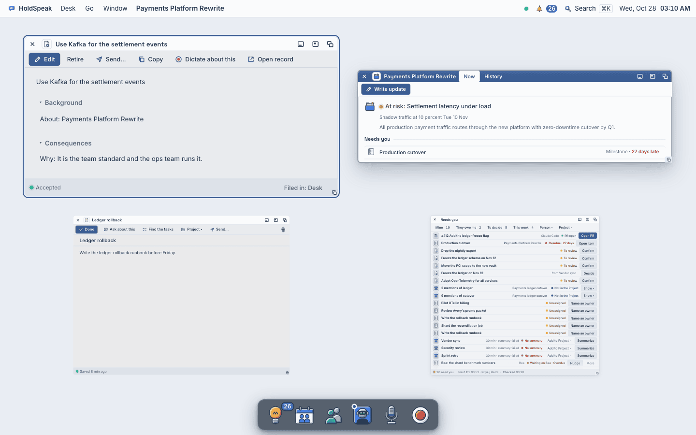
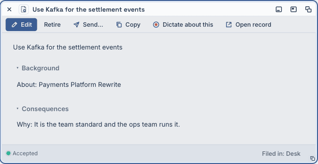
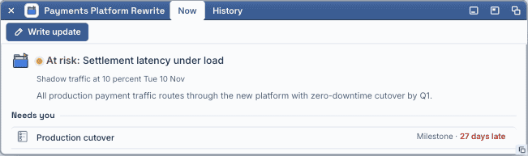
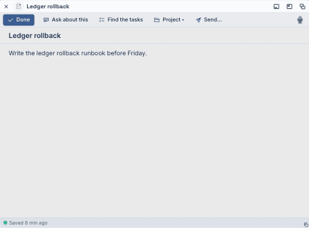
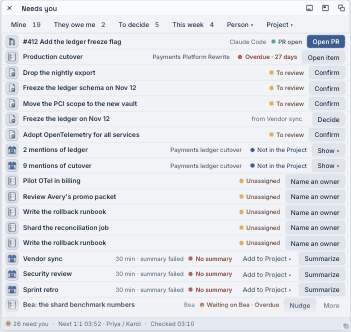
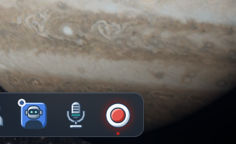
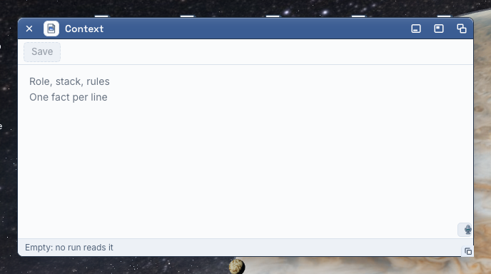

Overview, breath, context
Atlas pass 3 marks three defects as “canvas”: design before build. This page draws each one at real size on the real shot from native-experience/atlas-2026-10-27/, with two directions and a recommendation. You pre-approved the recommended direction (2026-10-27: “go with suggestions going forward”), so each part ends with a build order that a lane can take next without a pick.
- 23 · Mission control: “a grey slab with no names.”
- 24 · The Record tile while it records: “the breath, I cannot see it.”
- 26 · Context: “a grey Save and two grey lines.”
(a) Mission control: keep the wallpaper, name every window
What it does today
- ⌘⇧E, the dock, or Window ▸ Overview puts every shown window into a grid as a live plate: the window itself, scaled by
k, never reflowed (web/src/desk/components/window/Expose.tsx). - The scrim is one solid fill,
--desk-glass#e9edf3(components/window-chrome.css:118). That is the grey slab: the wallpaper and the floor go away. - A plate has no name under it. The pick target carries the name only for a screen reader (
sr-only,title), by the PHILO-16 §7 rule “its own title bar, no extra label”. Atk≈ 0.5 the title bar text is 6 px high and does not read. - The front window is told only by its own blue title bar (the Room in the shot). Keyboard focus lands on the first plate (the decision), so the one ring on the screen marks the wrong window.
- The registry already has each window’s name, glyph and kind (
windowRegistry.ts,useAllOpenWindows) and the front id (useFrontWindowId). Nothing new is needed from the hub.

door-mission-1440.png at half size. The real size is the base of both directions below.A · Captions on a slate veil Recommended
The wallpaper stays, under a slate veil with a 7 px blur: the floor icons blur away (you cannot pick them here), and Jupiter stays. Each plate gets the card step of the depth scale and, 8 px under it, a paper caption: the window’s 20 px glyph, its name in 12 px semibold, and a 3 px rule in the kind’s hue at its foot (decision violet, Project blue, note amber, an app the Workbench blue). The front window has a 3 px vivid-blue ring and a filled blue caption. Keyboard focus starts on the front plate. Hover draws a paper ring; nothing moves.




 Use Kafka for the settlement events
Use Kafka for the settlement events Payments Platform Rewrite
Payments Platform Rewrite Ledger rollback
Ledger rollback1440 × 900, real size. The plates are the real pass-3 plates cut from door-mission-1440.png at their real grid rects. The Room is the front window; the pointer is on the note (paper ring). The menu bar and the dock are the real ones from the same shot.
B · Names on the glass Direction
No veil: the wallpaper and the floor at full strength, as on the desk. The name is white text with a shadow under each plate and a 9 px kind dot before it; the front window’s name has a white underline. It is lighter, and closer to macOS. It is weak where the wallpaper is bright: the Room’s name sits on Jupiter’s cloud bands and holds only by its shadow, and the floor icons and their labels collide with the plates (Architecture review prep runs under the Room).
1440 × 900, real size, the same plates.
Build order for A (one lane, one PR)
- The veil.
window-chrome.css.desk-expose-scrim: replace--desk-glasswith a new token--desk-expose-veil: rgba(18,27,38,.42)andbackdrop-filter: blur(7px) saturate(1.1). Underprefers-reduced-transparencyuse the veil colour opaque over the wallpaper, not the grey. - The depth. Each scaled plate (
.desk-window-shell[data-plate="scaled"]) takes--depth-card. - The caption. In
Expose.tsx, render inside each pick Button one.desk-expose-caption: the 20 px glyph from the registry entry, the shown name (useAllOpenWindows().label), the kind hue as--k(map: decision, project, note, meeting, person, agent; an app is--kind-other). Place it 8 px under the plate rect fromplateVisual; one line, ellipsis at 340 px. Amend the PHILO-16 §7 comment: the plate keeps its own title bar; the caption is the name you can read. - The room for it. In
compositor/geometry.ts, reserve 32 px under each row of the overview grid, so a caption never touches the next row or the dock (the shot has 36 px and 50 px free today; a 5-window grid may have less). - Front. Read
useFrontWindowId(): the front plate getsdata-front(the 3 px--wb-sel-vividring) and its caption the blue fill; move the first focus (firstBtnRef) to the front plate. Hover and focus: a paper ring, no transform. - Tests. T2
Exposevitest: every plate has a caption with the window’s name; the front plate hasdata-frontand the focus. T3: the sweep’s overview state at 1440 (fit, contrast, 12 px, overlap) on the seeded desk. - Judge live on your desk with In Jupiter’s orbit and with the plain floor.
(b) The Record tile while it records: a breath you can see from across the room
What it does today
- The breath is a
drop-shadowon the orb picture: 1 px at 45 % red to 6 px at 80 % red and back, 2.4 s (components/record-orb.css:36, keyframesdesk-next-orb-breath). On the dark dock glass a 6 px red haze around a red orb is a small change in a small area. - Under the tile, a 4 px red dot (
components/dock.css:478), the size of the “running” dots under the other tiles. - The elapsed time shows only on hover, in the label above the tile (
RecordOrb.tsx.desk-orb-label; the Meetings tile’sREC 10:42is hover-only too,Dock.tsx:461). At a glance the tile says nothing about how long. - Reduced motion: a still 3 px haze.

dock-record-breath-1440.png, real size: the breath at its widest.A · The ring and the clock Recommended
Around the orb, a 3 px solid red ring that is there the whole time the meeting records: from across the room a red circle on the dark dock says “recording” even at the low point of the breath. Outside it, a red halo opens from 2 px to 8 px and fades from 50 % to 18 %, 2.4 s a breath: box-shadow on a lamp, colour only, the tile never moves. Above the tile, outside the dock plate, a red clock pill: the elapsed time in 12 px semibold white, tabular figures. On hover the label (“Stop recording · 12:04”) takes the pill’s place. The 4 px dot goes: the ring says it.
 12:0412:04
12:0412:04Five frames across one breath, 2.4 s (real size, then 2.5 ×)
12:0412:0412:0512:0512:0612:0412:0412:0512:0512:06B · The red tile Direction
While it records, the whole 56 × 48 tile plate is red, with a white stop square and the elapsed time in white inside it. The breath is the plate’s red, from #b3261e to #d8473c and back, 2.4 s (colour only). It is the loudest thing on the screen from across the room. It also makes Record a different object from every other tile: the D drawing goes away for a flat red block, which is the complaint the dock canvas of 2026-10-26 fixed (“the red Record ring is a different object from the other tiles”).
Five frames across one breath, 2.4 s
From across the room (the whole 1440 desk at 30 %)
12:04At 393 (the real phone shot: the rig left the Go menu open)
12:04Build order for A (one lane, one PR)
- The ring.
components/record-orb.css: retire thedrop-shadowbreath (park the keyframes as a comment). Add.desk-orb.is-recording::after: a 40 px circle centred on the 48 px face (34 px on the phone’s 40 px face),box-shadow: 0 0 0 3px var(--wb-rec), 0 0 0 5px color-mix(in srgb, var(--wb-rec) 50%, transparent),pointer-events: none. Keyframesdesk-orb-ring2.4 s ease-in-out: the halo 5 px at 50 % → 11 px at 18 % → back. Under reduced motion: no animation, the halo at 8 px, 34 %. - The dot.
components/dock.css:478: remove the 4 px dot under the Record tile while it records (the ring says it). - The clock.
RecordOrb.tsx: renderelapsedin a newspan.desk-orb-clockoutside the hover label (aria-hidden; the Button’s aria-label already says it).dock.css: a red pill above the tile,bottom: calc(100% + 13px)(12 px on the phone), 18 px high, 12 px semibold white, tabular figures, the badge ring. Hide it while the hover label shows. When the hub gives no start time, show no pill (never0:00). - Tests. T2 in the Dock vitest file: while recording, the tile has the clock with the elapsed time and no running dot; it shows nothing when idle. Kit delight test (
surface/__tests__/kitDelight.test.tsx): the ring keyframes exist, and a reduced-motion rule stops them. T3: the sweep’sdesk-recordingstate at 1440 and 393 (still, 12 px, contrast of the clock). - Judge live from your chair, with a real meeting on.
(c) Context: say what it is for, show one fact, make Save live
What it does today
- Context is the always-on briefing that every engine run reads first: the saved text goes in as the first system message of every agent, Ask and meeting-intelligence run (
holdspeak/constitutional_context.py:1; callers inintel/engine.py,services/ask_service.py,workbench_conductor.py). It is one text for the whole desk, not the context of one thought. - The face (
web/src/pages/cores/ConstitutionalContextCore.tsx): a toolbar with Save only (Version history when there are revisions), a pad whose placeholder is “Role, stack, rules / One fact per line”, and a status bar “Empty: no run reads it”. - Save is already disabled until you type (
disabled={!dirty …}); disabled, the primary Button draws grey, so on an empty desk the only verb looks dead, and nothing says what a good fact is. - Its purpose is written once, in
applications.ts: “The always-on briefing every agent receives.” The window does not show it.

context-1440.png (⅔ size).A · The object face Direction
While nothing is saved and the pad is empty, the body is an empty face like the other empty faces (Calls has its telephone): the document object at 64 px, one line, one verb. Start from an example fills the pad with three example facts that are his to change, and Save turns live. Clicking the face puts the caret in the pad.
Every engine run reads this first.
Start from an exampleB · The pad says it Recommended
The pad is the body from the first second, so he can type at once. While the pad is empty, its head is one quiet row: the document object at 32 px, “Every engine run reads this first”, and under it “One fact per line. You can change it at any time.” The placeholder is one real example fact. Use the example (a ghost Button, shown only while the pad is empty) puts that fact in as text. Save is the primary: disabled while the pad is empty, blue the moment he types. Once there is text, the head row goes; the status bar keeps the purpose.
B at 393
Build order for B (one lane, one PR)
- The head row. In
ConstitutionalContextCore.tsx, whendraft.trim()is empty, render above thePadGadgetone row: theartifactsprite at 32 px, “Every engine run reads this first” (13 px semibold), “One fact per line. You can change it at any time.” (12 px muted).constitutional-context.css: a dashed--wb-rule-softrule under it. It goes at the first character. - The example. The placeholder becomes the one fact
I lead the payments platform team: three reports, Python 3.12, Postgres 16.A ghost Button Use the example in the toolbar, only while the draft is empty: it sets the draft to that line (dirty) and puts the caret at its end. - Save. No logic change: it is already disabled until dirty. Check that the library Button’s disabled primary and its live primary are the two faces in the canvas (grey, then
--wb-sel). - The status bar. Keep it as it is (“Empty: no run reads it” → “● Every engine run reads this first”).
- Tests. T2 in the Context vitest file: empty → the head row, the placeholder fact, Use the example, Save disabled; press Use the example → the draft has the fact, Save enabled, the head row gone; typing one character → Save enabled. T3: the sweep’s Context window at 1440 and 393 (fit, 12 px, library Button).
What this canvas could not establish
- The 1440 atlas shots are palette-reduced. In
desk-recording-1440.pnganddesk-1440.pngthe red orb comes out brown (rgb(97,87,79)at its centre): the shots were reduced to stay under 300 KB. The 393 shot keeps the red. The canvas draws the real sprite over the tile. Part of “I cannot see it” may be the shot, not the product; judge the breath live, not on an atlas PNG. - Whether every window announces its kind to the registry.
announceWindow(…, kind?)takes it as optional; the build lane must map the apps without one to--kind-other. - How the overview grid places five or more windows: the room under each row was measured on four plates only.
- How bright the ring and clock read on your real display from your chair: the “across the room” row is a scale-down, not a distance.